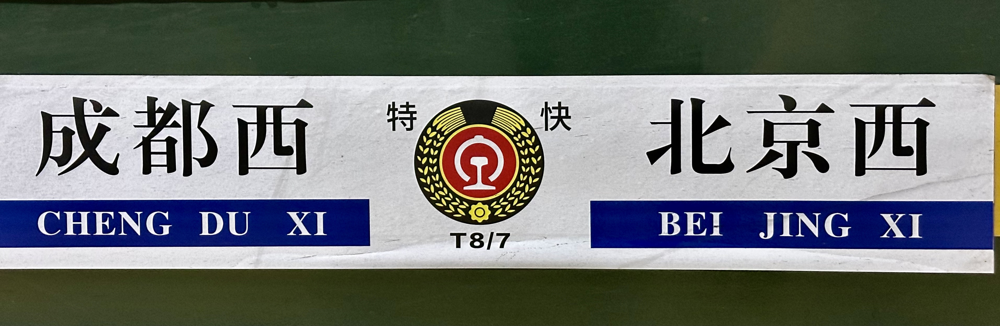

钢铁蜀道，葳曳乎寒
本文最早由本作者在知乎发表；由于一部分图片现已不在本地存储，这些图片可能不可避免地出现知乎的水印。
.jpg)
宝成铁路是中华人民共和国第一条完成电气化改造的铁路线路。1956年7月中旬，线路在甘肃省徽县黄沙河村全线接轨；1958年元日，线路在成都举行通车典礼，并由贺龙主持首趟成都赴京列车的剪彩。这条线路从选址到建线再到电气化都得到了苏联方面给予的协助，如今已“物是国非”；作为中国西南地区首条通往西北地区的线路，如今宝成铁路每天仍有3对图定列车经行。
作为在西安长安区就读大学的一名江苏籍普通学生，对宝成铁路最初也仅是作为“一五计划”的产物而在高中教科书上有所见闻；但高校交通不便，鲜有如今一般的闲致动身前去一睹。前些日子偶然发现些关于宝成铁路的文章，终于是决定要去了；而今年大寒节气前后总算是留在了西安而且有空了；于是浅拟了一些行程计划，在春运期间准备一往。
2018年夏季沿线地区暴雨之后，宝成铁路上经行的列车大幅减少，加之所有的客运列车都必须在白天通过事故频发的略阳段，因此只能将出行计划分为2天，并且选择最早由北侧进入宝成铁路的“天府之星”T7次列车。虽然今年这一时间段有西安铁路局增开的Y501/2次列车作为前往秦岭站的旅游专列，但我因自觉行程独特而终于没有选择抱团，所以自然也不能购得这对旅游列车的车票。
第一天（2024.1.20）：秦岭与灵官峡
早晨6:02，T7次列车准时从西安站出发。列车在准点离开宝鸡站后提前了15分钟到达秦岭站，颇令人吃惊。
在西安站上车时车厢里大多是从首都回乡的四川务工人员；他们在这趟车上已经度过了十数个小时，很多乘客此时仍然睡在各自的硬座座席上。由于中小学寒假也已经开始，再加上这一天是周末，同车有很多从宝鸡上车的未成年朋友和他们的家长；他们基本都在秦岭站下车。秦岭站虽在中国铁路线网中等级不过四等，但其周边在最近几年宝鸡市政府的宣传和帮助下拓展出了很多衍生产业。秦岭站东北方向数公里外即是嘉陵江源，很多登山客也会选择在这站下车攀登。

列车在驶过任家湾后便算是真正进入了宝成铁路。到秦岭之前，列车一共经过大小47个隧道，其中最困难的路段最小曲线半径不足300米，最大坡度超过30‰（每公里上升30余米）；因此在经过观音山展线时，从最低处向上望可以望到2层铁路线路相叠加的景观。一路上隧道与桥梁交错，光线的明暗扑朔透过玻璃车窗引得车厢里感慨一片，而作为秦岭朝北的阴坡，与宝鸡市区经已化完的积雪显得尤为格格不入的银装素裹更是让车厢内显得亮堂。不少乘客本就是慕雪景而赴秦岭，不曾想刚到半山腰便能有如此景色，自然也举起各自的拍摄道具；一些远赴四川的外出务工人员也不例外。日出尚不久的光线让山的轮廓有如黑墨，与雪与雾凇缀就的白底协同的画中之境令整个车厢一时间充满了快乐的空气——小孩们欢脱着一手指向窗外，一手纠缠着举着相机的家人的衣袖，分享着自己的惊喜；青年们将手中播放的影音暂停，切屏到相机不动声色地拍摄着窗外；中年们或咧嘴或眯眼，通过视频通话转述着本应专属的绝景；老年们和乘务们望着车厢内的一切，满是意料之中的经验神色。

驶入秦岭隧道时列车开始减速；数分钟后，列车驶离隧道，秦岭站便到了。
.jpg)
因为这一次列车到达宝鸡站的时间在8点前后，且到达秦岭的时间是9点左右，因此从宝鸡上车的乘客不少都是趁气温还未达到一天的最高值而赶紧前来看雪的，因此这一站下车的人非常多。车站出站口一众大巴已经等候多时，它们会将乘客送到嘉陵江源附近，免去乘客徒步行走于盘山公路的危险。在大巴停车区域旁边便是西安铁路局建设的宝成铁路主题文化公园和展区；可惜这些展区没有开门。公园虽小，但有不少用铁路施工废料打造的雕塑。


因为此行的主要目的不是爬山，加之在不到2小时后我要乘坐6063从秦岭赶赴凤县，在简单转了一圈后便重又进入了秦岭站，准备检票。
站务、护路人员和安检对我的进站略感意外。询问后得知，秦岭站很少有午前进站继续乘车南下的乘客。
由于宝成铁路阳平关以北地形限制采用单线，两站之间在指定时间段只能行驶同一个方向的列车。因此，在午前经过北段的列车都以南行为主，午后则为北行。
“今天早上的6063就你一个人在这站上。”其中一位站务在核查自己的名单后说。
我本想顺势继续问些什么，但被另一位站务同他发起的交谈打断了。
“（K）545啥时候到？今天应该也早点了吧。”
“不知道…早不早点还难说，电话还没来。”
我正思忖“电话”所指者何，这时隔着有色窗户看到站上一台和谐3型电力机车从南向北驶过——这想必应该是刚刚牵引T7上山的补机了。
由于线路修建时宝鸡至秦岭段坡度极陡，在蒸汽机车时代同样是从青石崖到观音山站，步行时间甚至与铁路所需时间几乎无差；这也是线路入选第一批电气化名单的主要原因。采用电力机车后，经行列车仍然需要在车头增挂1台电力机车以增强动力和制动效果；货运列车则还需在车尾加挂2台机车作为补机“前拉后推”，才能保证足够的开行动力。这些帮助列车安全通过宝成铁路北段的补机曾经都属于“秦岭补机队”，现在都属于“西局新段秦北运用所”。
片刻之后，一通电话打来；秦岭站的站务接到观音山站的电话，得知K545已经经过了观音山站，即将到达秦岭。虽然没有人需要被检票，但语音还是要播报的；片刻之后，K545进入了站台。又下来了一大批乘客。

车站站务看我隔着站房门凝视着站台，便问我要不要一起进站，方便我拍些照片——只要我不上站台。我自然欣然答应；随后站务员之一便说起他的一位铁路爱好者朋友，家里放满了机车、车厢的比例模型。我那一刻大约是除了羡慕还剩羡慕了。
如此又等待了K245的进出站和相应补机的脱钩。终于，6063次列车提前了十分钟有余到站了。
与前面三趟到达秦岭的南行列车相比不同之处在于，6063是唯一一趟不到达成都站的列车。加之这样列车从宝鸡始发的时间是非常惹人喜爱的10点，票价也最为便宜——这个时间既不会因睡懒觉而误车也不会因道路结冰等原因晚点——因此这趟列车更是满载游客。
在检票时，我问站务这里在午后是否候车的人会更多一些。他们说基本都是坐午后的6064次列车回程的人，这一天从秦岭到宝鸡的票大约卖出去了800余张。他们又补充，这一趟从宝鸡开来的6063次在秦岭下车的人数也有不下200人。登上站台，整个站台除了我和站务确没有其他人；但当列车驶入、车厢开门后，境况却大不相同了。


因为“先下后上”，登上列车时车厢里几乎没有什么乘客；与此同时，刚刚攀谈的一位站务似乎是即将暂时告别秦岭站，其他几个站务帮伊提了些生活行李，又说些“早点回来”之类，寒暄一会之后在我之后上了车。虽然列车在秦岭停车时间有接近20分钟，但我上车不久后列车就发车了。补机已经脱钩；它今天的登山任务已经到此为止了。在下午，这些补机会将早上拉上山的这些列车的返程车组拉下山。
在驶出秦岭后，列车很快经过第一个大弯道。这时列车已经进入秦岭的阳面，开始下坡；沿途的山上便也没有雪了。车上还有些身穿橘黄色工作服的铁路工作人员，在这种难得的时间见缝插针打些牌，聊以休憩。
6063次列车作为公益性质的列车，在宝鸡至广元之间往返；其间所有的站点全部停靠，不论这些站点是否在12306app的站点列表上有其名讳。很多沿线居民在前一天进宝鸡城买药、看病或者购物之后第二天都通过这趟列车回家，因此这趟列车的意义是很大的。本世纪20年代初CGTN曾经以这次列车为主题拍摄过纪录片《秦岭6063》，让这趟列车和宝成铁路一同意外迎来第二春。
列车在先后经过黄牛铺、红花铺、油房沟站后停靠凤州站。这时打牌工作人员中突然有一位说这一站有些什么特殊车厢，引得与他随行的众人无不放下手中的纸牌攀到窗户上够头观望，但发现并不在这里，于是又都失望地回到座位继续玩牌了。在停车1分钟后，车务走到我所在的车厢，询问是否有人需要炒面作为午饭。毫无疑问这趟列车并没有餐车，这应当是车站给车务人员的午饭伙食；出于好奇心，我也购得了一份。或许是公益性质的原因，餐食本身并不贵。
“今天的炒面肉还挺多的喔。”车务把餐盒交到我手里时说。

与炒面相左的是四季豆、土豆和红烧肉。除了炒面口感有一些合乎本身定位的干之外，其料确如乘务所言不可谓不足，仅仅需要人民币8元就能购得的午饭能够如此抵饱，如若在大众点评兴许也能得到些好评了。虽然已经在下坡，但是海拔还是不算太低的；在高海拔地区吃上这一顿口味偏重的饭菜还是很能刺激味蕾的。
再经过一站七里坪，凤县站便到了。在列车开始减速时我便站在车厢门处了；列车长前来准备开门，顺势问我从来，为何在凤县下车。在一一解答之后才知道，近期6063/4次列车正在进行这方面的数据统计。一听我早晨是乘坐T7次列车来的秦岭，列车长顺势便问：“7次列车到秦岭下车的人应该也不少吧？”
“7/8次”列车是上世纪80年代至新世纪10月期间T7/8次列车的车次号。这位列车长在早些时候和车厢内玩牌的工作人员闲聊时也说，自己在这条线上跑了也有不少年了；足可见这位列车长在岗年数之长。在我回复说车厢内还有很多操四川话的人没有下车、但下车的人至少有200人之后，列车长便也点头、咧嘴而笑。“这个季节秦岭的风景好看，”他说，“前两天山里面刚下过雪，来看的人会多一些。”
出站后走过凤县嘉陵江“0号大桥”，就到了巴士乘车点。乘车点没有站牌，招手停车；幸而没有等待太久，60分钟一班的5路车便来了。招呼司机在龙湾半岛停车之后，我在下车之后沿316国道又走了二十分钟，到达了灵官峡附近。
灵官峡是嘉陵江自秦岭引出之后经过的第一个峡谷。1982年灵官峡附近发生山体移位，导致路基明显下沉，因此西安铁路局决定改线，在灵官峡口至西坡乡中滩村之间开凿新的灵官峡隧道。1985年新灵官峡隧道建成，并于1986年通车；原先的灵官峡隧道在2008年被凤县政府利用改为了宝成铁路文化体验馆，与其他设施一起组建为“灵官峡景区”。
由于景区本身收费，我犹豫再三没有进入。连接新灵官峡隧道和关上隧道的铁路桥下有一段台阶可以到达以前隧道口的值班亭；目前值班亭已经废弃了，但台阶依然还可以攀登。登上台阶后，灵官峡隧道宝鸡端的全貌得以展现出来。


宝成铁路修建过程中的建筑工人主要是沿线地区的铁道兵；灵官峡也不例外。杜鹏程曾以其在1955年宝成铁路建设工地实地采访的经历为题材创作有小说《夜走灵官峡》，并一度被后人作为中小学课文学习；其间不乏对灵官峡旧隧道修建过程的描述。
……纷纷扬扬的大雪下了半尺多厚。天地间雾蒙蒙的一片。我顺着铁路工地走了四十多公里，只听见各种机器的吼声，可是看不见人影，也看不见工点。一进灵官峡，我就心里发慌。这山峡，天晴的日子，也成天不见太阳；顺着弯曲的运输便道走去，随便你什么时候仰面看，只能看见巴掌大的一块天。目下，这里，卷着雪片的狂风，把人团团围住，真是寸步难行！但是，最近这里工作很紧张，到处都是冒着风雪劳动的人。发电机、卷扬机、混凝土搅拌机和空气压缩机的吼声，震荡山谷。点点昏黄的火球，就是那无数的电灯。看不清天空里蛛网似的电线；只见运材料的铁斗子，顺着架在山腰里的高架索道，来回运转。…………我顺着他指的方向望去，只见探照灯的光带，透过飘飞的雪片，直向天空射去。顺着光带，隐隐约约可以看见几十名工人像贴在万丈绝壁上似的，打着炮眼，仿佛在开凿着登天的梯子。……
……我顺着他的手望去，只见一个人站在便道旁边的电线杆子下，已经变成一个雪人，像一尊石像。看样子，她是指挥交通的。这条从绝壁上凿开的运输便道，并不宽畅，一天二十四小时，汽车、马车、驮骡、架子车和行人，来来往往，非常拥挤，没有人指挥就乱得一团糟。……
凤县将自己定位为大秦岭的会客厅不过2019年之后的事情；然而将灵官峡设为景区则是此前11年，足可见凤县和宝鸡对宝成铁路这一工业遗产的重视。因为正值中午，我估测此时应正好是单线区段的换向时间，因此不会有太多列车经过，再加上返程的6064次列车也快要检票，便启程返回凤县站。在灵官峡公路隧道口等待了十分钟公交车，终于是来了；在车站桥头下车之后，这一天的北宝成之行便告一段落了。

在安检处突然被站务打了招呼。定睛一看，原来这就是之前那位被秦岭站其他同事送行的同志；伊见我不开口，便问我是不是已经忘了伊是谁了。我刚反应过来，于是便也抱歉；进站人数不多，安检完之后伊便问我为什么在这一站下车。在听说我是去灵官峡之后，伊便也露出赞同的神情，之后继续投身工作了。
很快列车便开始检票。在站台上，所有准备上车的乘客都按站务要求聚在一起；按照后者的经验，这些乘客应该都在同一节车厢，且列车进站停靠后车门应该就在这个位置。随后他自言自语，抱怨如今宝成的车越来越少，连去扬州的K246（/7）次列车都由有变为了没有。旁边有乘客安慰道“只要凤县通了高铁，一切都会好起来的”，但站务只是摇头，说这个站通高铁那简直是不可能的事情。整个站台顿时与大寒的冰风凝为一体、陷入了死一般的寂静，只留下不远处工业区的声音。幸而之后6064次列车的轮毂与铁轨的碰撞声打破了僵局，众人也顺势登车。

宝成铁路北线的地形限制注定了单线，也铸就了运量的上限。阳平关站引出的阳安铁路为通过南宝成出蜀的列车提供了通过安康借道西康直奔西安和转走襄渝前往湖北的方案，极大程度上减轻了北宝成铁路的运输压力，但也导致很多工作人员每天的任务数量直线下降；K246/7次列车就是其中之一。
列车发车后不久便开始了补票。列车员每补一张票都跟补票的人说：“到秦岭之后把座位让给有票的人。秦岭站人要上满的。”
这一天，下午从秦岭站乘6064次列车回宝鸡的乘客数量足有近千人。在驶入秦岭站之前，整个列车可谓空无一人，是实打实的“运椅子”；但在驶离秦岭站之后，整个列车天黑时从外面几乎是已经看不到车厢内的灯光了。回程的6064次列车依然是逐站停靠；在艰难地摇晃到任家湾站时，天已经是完全黑了。又走了数公里，6064次列车的全部乘客都在宝鸡站下车。

第二天（2024.1.23）：接轨点与地震遗址
吸取了20日凌晨从学校约车直奔西安站的高昂车费之经验，1月22日晚上我便到达了西安站，准备乘坐第二天早晨6点02分发车的熟悉的T7次列车。到站时闸机尚不准我进站候车，原因是距离进站时间还有近一个半小时。

,_Jan_22_2024.jpg)
凌晨时分的西安站每个小时基本只有1-2班快车，西安站的站内播报不会太过频繁，因此睡眠质量尚可。5时40前后检票之后来到站台，直奔自己的车厢而去。这时往身旁同台停靠的列车方向一瞥，发现一列刷绿的轨检车。于是自然是要拍照的；又走了一段发现这台轨检车厢的后面还是轨检，终于发现了不对。停靠在2站台的这列由和谐3D型电力机车0520号担任本务的列车全列都是轨检，不得不感叹我的运气。

 轨道检测车WX25T-999328 |
 综合检测车SY25T-999300 |
 红外线检测车WX25T-999299 |
 轨道检测车WX25T-999526 |
列车很快就发车了；熟悉的路，熟悉的景。唯一不同的是不熟悉的目的地。
这次前往一〇九隧道的决定令我心中有几分惴然。网上较为广传的老一〇九隧道录像最新的一段视频上传时间是2020年秋天，据其下评论区2023年冬天一名网友留下的评论中称当时一〇九隧道南口的抢建铁架棚已经又一次被落石砸毁，南口更是废墟一片，因而同样被废弃的一一〇隧道肯定是去不成了；另一方面，隧道内部的渗水在江畔的低温下多半已经结冰，能否安全进出存疑。然而，一〇九隧道的情况肯定是一天不如一天，因此不论如何趁早前往无疑是正确的。想到这里原先的恐怕倒也好了不少；唯一的担忧变为了该区域是否允许我们普通市民前往。
在列车驶离凤县站之后，列车很快便通过了灵官峡新隧道，进入了甘肃省界。再经停两当之后，徽县站便到了。由于需要赶2个半小时后出发的6064次列车回宝鸡，时间不可谓不有限；因此火速出站，开始了今天的“游玩”。
根据曾经前往探访的人所说，在列车上根据地图很快绘制了出站后前往原一〇九隧道的走线。出站后立即往南走，路过了一片看上去是砟石研磨场的区域；这是卫星地图上没有显示出来的。幸而工务段的人士在看到后也没有阻拦，于是便继续按之前定好的路线前进。

在穿过一片小规模的菜地 （注：农田里可能播有种子。农作物是当地居民营生的关键，因此请尽量避免不必要的落脚，不要故意踩踏土地上的作物。） 之后，便可见到新旧一〇九隧道的岔路口。通往旧隧道的岔路轨条、枕木均已被拆除，只留下道砟指引着方向。缘砟而行，忘路之远近，忽然走到了一片异常宽的区域，停着两台挖掘机。这时老一〇九隧道的轮廓已经能看得很清楚了，再加上废弃的电线杆依然立在那里，因此虽然在这里又有岔道也并不难选出正确的道路。又走了一段，一〇九隧道便完全展示在了我们的面前。


一〇九隧道建成于1956年。2008年汶川大地震时，有一运输航空燃料的货运列车在其内行驶；地震导致落石突然滚下，导致燃料容器遭撞击在隧道内发生爆炸。震后抢修完成之后，这一隧道显然已经不能保证其行驶的安全性，——这一事实在先前提到的抢建铁架棚再度遭毁一事中已经证明有余，——因此决定另建新的一〇九隧道。2008年11月新一〇九隧道建成后，这一段线路改曲为直，沿江而行的这段线路自然也就被废弃。
走近北口，看见隧道左下角依然留着未废弃时“严禁进入”的告示。作为一条铁路单线的隧道，禁止行人随意进入自然是情理之中，不过如今他已经不是铁路的隧道了。然而，面对这一份跨越近70年的喊话，我还是选择了对它曾经的使命的尊重，为自己强加了一份“手电筒电力可能不够我走完一整个隧道”的思想钢印，转身选择了离去。临走之前发现地上一些野生花草长的奇好——曾经它们都受着枕木的压迫，如今终于都挺而站起，在河谷的寒风中悠然摇曳着；也颇令人有几分感慨。电线杆上也绑着一些橙色的看上去很新的丝带，走近一看似乎是极限运动社团的活动纪念。又想起走来之时往马路上走的身背竹篓的老年男士，仔细想来这确不是一个人迹罕至的地方。不过沿线并没有什么随意丢弃的垃圾，一副生态良好的模样；也许还它一份退休后应有的宁静才是。
正在准备回去时，远处传来一阵机车的轰鸣——循声望去，这一天的K545次列车正在驶向新一〇九隧道。此时的列车已经度过了困难路段，因此没有补机在前。

原路返回到徽县站，正好见到了之前目击到我徒步南下的那几位工务段人士，于是便借机问路，讨教南北接轨点纪念碑的位置。巧合的是其中一位在这一天早晨正好去过，于是给我展示了他拍摄的照片。但当我请求他们在我的地图上标出的时候，他们却发现十分困难。在他们指明方向后，我便继续北上，寻找着他们所说的能“直接看到有个方尖碑轮廓”的位置。在沿481县道北行十数分钟后，隐约看到江对岸有一个方尖碑一样的东西，旁边有一面红旗；红旗旁边又有一些橘黄色马甲的人站立着。于是拿出手机相机放大一看，发现这就是在找的纪念碑。打开卫星地图一看，发现这里应该是非铁路人员能到达的离纪念碑直线距离最近的位置了；因此盘算着返程的车厢和座位的位置，心想如何能近距离看到这一纪念碑。

1956年7月，宝成铁路在甘肃省徽县黄沙河村南北接轨，宣告线路建成。线路在接轨点立纪念碑，供人欣赏，聊表纪念。1981年宝成铁路沿线发生严重水害，纪念碑被泥石流冲毁并掩埋，多次寻找未果，不知所踪。2021年2月，西安局汉中工务段在铁路沿线环境综合整治过程中，在宝成铁路里程K147处附近发现了一截纪念碑；他们迅速在周边开始寻找，几经周折终于找到了已被泥石流损坏成3截埋在地下40年的纪念碑全体。7月20日，纪念碑修复完成。


带着一窥正面的念想，原路回到徽县站。路上忽有铁路声音，循声望去，原来是一列国际货运列车。由于中国方面“一带一路”建设工作的全面推进，“蓉欧快铁”等客运品牌实现了川货出国；客运列车在宝成铁路上的减少间接促成了其上货运列车密度的提升，从而也为国际货运列车提供了新通道和新卖家。


在秦岭站，一位老人上车坐在了我的旁边。虽然天色已晚，窗外的景色逐渐由暗变为了看不见，但他依然能洞察到一些时机，迅速地举起手上的相机拍摄。有一瞬间我留意到它的相机背带上有一个徽章；待其放下，定睛一看，徽章上印有刘少奇的人像。
青石崖站是宝成铁路观音山展线成都一端的终点；上世纪60年代，刘少奇曾在青石崖站下车观景；为作纪念，青石崖站建下一座小木亭，并名之为“少奇亭”。一番询问才知，他是咸阳人氏，前几日还在北海，近些日子因为陕西全省空气质量被雪直线拉升而回，在观览完铜川冰瀑后前来看雪。先前他曾经因公在凤州乘大巴车前去嘉陵江源游玩，乘坐火车往返还是第一次。当谈及是日天气时，他想起上世纪中后期漠河的蒸汽机车。“那天冷，零下二三十多度，蒸汽机车都冻坏了，发动不了。”在如今高度电气化的时代，他对乘火车出行持非常高的热情。“陕西是一个工业（比重）比较重的省区。”他说。

当他举起相机拍摄风景的时候，背带上的徽章也在无声地储存着这些风景。
写在最后
不论怎样，6064次列车在秦岭晚点出发的情况下在19:02早点到达了宝鸡站，让一直对能否赶上19:17发车的Z378次列车回西安提心吊胆的我如释重负。所有的人都在这站下车，而我也因需要尽快上台而在铁路工作人员的帮助下“便捷换乘”成功。登上这趟西宁开来的列车，不由得回想，宝成铁路的魅力之处所在乎何。
早在北洋政府时期，由成都引出一条前往西北地区的铁路的构思就已经在纸上，不过因为或这或那的因素终于没有投入建设。在苏联人的帮助下，新中国在成立后7年即建成是线，令人瞠目；正是当年超14万工人和铁道兵昼夜的掘进才让今天的车厢能够充满快活的空气，才让更多货物有走得更远的机会。这条铁路也拉来了宝贵的铁路建设经验，也拉来了一个全新的电气化时代，更拉来了广元、略阳等大中城市。如今的广元已经成为兰渝、西成等高速铁路的枢纽，不可谓非进一步飞黄；一些其他地方更是靠山吃山靠水吃水，依靠宝成铁路发展红色旅游业，迎来经济结构的转型新思路。2018年暴雨之后，宝成铁路沿线仅开行一来一回共2次客运列车，招致略阳等地联署抗议，使宝成铁路一度重回人们的焦点。铁路沿线的人们需要这条铁路进城或来往，这是不可否认的事实——这也解释了为什么6063每站都会停靠，每站都有非工作人员登车。这是一条在过去70年受尽磨难、满面疮疤的线路；正是历代铁路人的苦心经营和维护，才让这条线路等到了线路检查与诊断技术先进十分的今天。任中国全网高速铁路如何发展，“宝成精神”依然为后者唱；毫无疑问，宝成铁路还会继续运行下去。
嘉陵江水随意地流向四川盆地，惬意地避让着新旧线路桥梁的水泥柱；秦岭山脉沉默地隔断南北，无言地颔首凝视着自己身上的穿孔和往来的钢铁长龙。一路的花草在泥与雨雪中随风摇曳，其根茎终于是没有断裂，只是聆听着水声和鸣笛在山谷之间的无尽回响。